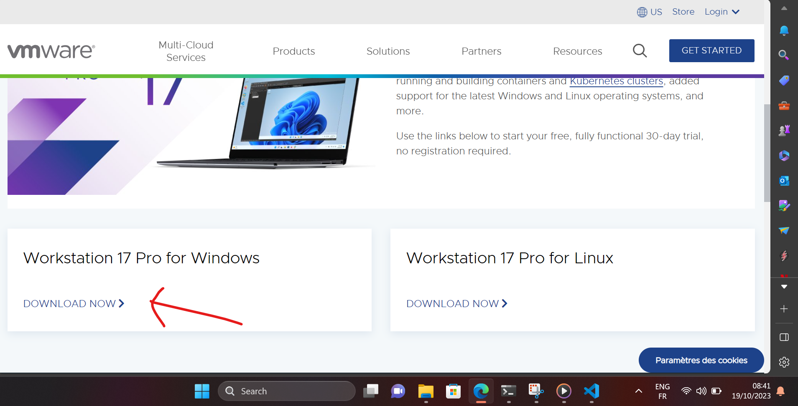
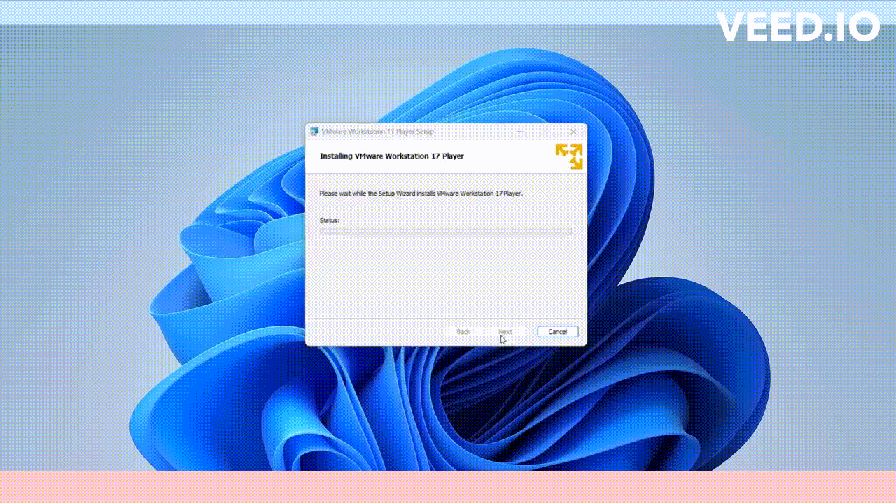
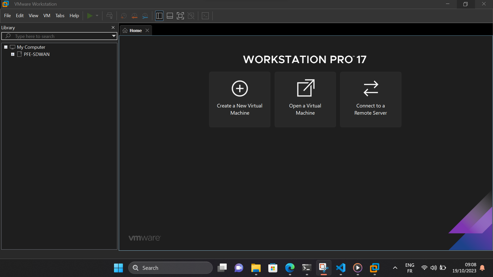

Installation de VMware sur Windows
Pour installer VMware sur Windows 11, voici les étapes que nous devons suivre :
Activer la virtualisation
Nous devons d'abord nous assurer que la virtualisation matérielle est activée sur notre système hôte, car VMware Workstation en a besoin pour fonctionner. Cette fonction est généralement disponible sur la plupart des PC, mais elle peut être désactivée dans le BIOS. Voici comment procéder :
- Redémarrons notre PC.
- Accédons au BIOS de notre système. Nous pouvons généralement y accéder en appuyant sur une touche spécifique (comme F2, F12 ou Supprimer) au démarrage de notre ordinateur.
- Dans les paramètres du BIOS, activons la
technologie de virtualisation (VTx). - Enregistrons les modifications et quittons le BIOS.
Téléchargez VMware
Rendons-nous sur le site officiel de VMware pour télécharger la dernière version de VMware Workstation Pro compatible avec Windows 11.

Exécution le programme
Une fois le téléchargement terminé, exécutons le programme d'installation de VMware Workstation Pro. Suivons les instructions qui s'affichent à l'écran.

Note
Lors de l'installation, nous serons invités à accepter les conditions d'utilisation.
Finalisation de l'installation
Une fois que nous avons choisi les options d'installation, suivons le processus d'installation pour que VMware Workstation soit installé sur notre système.

Note
Voici une clé de licence complète pour VMware Workstation Pro : 4A4RR-813DK-M81A9-4U35H-06KND
Une fois que la clé de licence est acceptée, nous devrions avoir un accès complet à toutes les fonctionnalités de VMware Workstation Pro.
Démarrage de VMware
Après l'installation, lançons VMware Workstation. Nous serons prêts à créer et gérer des machines virtuelles sur Windows 11.

Note
Assurez-vous également que votre système Windows 11 répond aux exigences minimales de VMware Workstation pour garantir un fonctionnement optimal des machines virtuelles.
Ressources supplémentaires
- Pour plus de détails, vous pouvez consulter le lien suivant sur VMware Documentation : VMware Workstation Pro Documentation.
Mots techniques
VMware, Workstation Pro, BIOS, virtualisation matérielle, technologie de virtualisation (VTx), pilotes VMware, RAM, stockage, machines virtuelles.